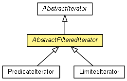

org.eclipse.net4j.util.collection
Class AbstractFilteredIterator<T>
java.lang.Object
 org.eclipse.net4j.util.collection.AbstractIterator<T>
org.eclipse.net4j.util.collection.AbstractFilteredIterator<T>
org.eclipse.net4j.util.collection.AbstractIterator<T>
org.eclipse.net4j.util.collection.AbstractFilteredIterator<T>
- All Implemented Interfaces:
- Iterator<T>
- Direct Known Subclasses:
- LimitedIterator, PredicateIterator
- public abstract class AbstractFilteredIterator<T>
- extends AbstractIterator<T>

An abstract base class for custom iterators that filter the elements of a delegate iterator.
- Since:
- 3.3
| Methods inherited from class java.lang.Object |
clone, equals, finalize, getClass, hashCode, notify, notifyAll, toString, wait, wait, wait |
AbstractFilteredIterator
public AbstractFilteredIterator(Iterator<T> delegate)
computeNextElement
protected Object computeNextElement()
- Description copied from class:
AbstractIterator
- Returns the next iteration element, or
AbstractIterator.END_OF_DATA if the end of the iteration has been reached.
- Specified by:
computeNextElement in class AbstractIterator<T>
isValid
protected abstract boolean isValid(T element)
Copyright (c) 2004 - 2012 Eike Stepper (Berlin, Germany) and others.